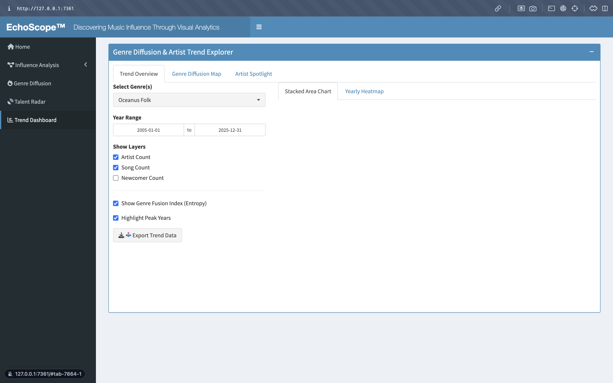

EchoScope™ Prototype Storyboard
EchoScope™ Storyboard
EchoScope™ is a visual analytics prototype designed to analyze artist influence, genre diffusion, and talent discovery through interactive dashboards and knowledge graph exploration.
üîß Setup & Data Preparation
Before diving into the individual UI panels, here’s a quick summary of the R packages we load and the core data-preprocessing steps used throughout EchoScope™. Click Show to expand.
Show libraries & data-prep code
# ——— R Packages ———
# ——— Shiny & UI ———
library(shiny)
library(shinydashboard)
library(shinyWidgets)
# ——— Data wrangling ———
library(dplyr)
library(tibble)
library(jsonlite)
library(lubridate)
library(scales)
# ——— Tables & plotting ———
library(DT)
library(ggplot2)
library(plotly)
# ——— Network analysis ———
library(visNetwork)
library(tidygraph)
library(igraph)
# ——— Influence Graph Data Prep ———
# 1) Load graph JSON
kg <- fromJSON("data/MC1_graph.json")
nodes_tbl <- as_tibble(kg$nodes)
edges_tbl <- as_tibble(kg$links)
# 2) Build index map
id_map <- tibble(
id = nodes_tbl$id,
index = seq_len(nrow(nodes_tbl))
)
# 3) Translate source/target → from/to
edges_tbl_graph <- edges_tbl %>%
left_join(id_map, by = c("source" = "id")) %>% rename(from = index) %>%
left_join(id_map, by = c("target" = "id")) %>% rename(to = index) %>%
filter(!is.na(from), !is.na(to))
# 4) Create tidygraph object
g_tbl <- tbl_graph(
nodes = nodes_tbl %>% rename(node_name = name) %>% mutate(index = row_number()),
edges = edges_tbl_graph,
directed = TRUE
)
# 5) Subnetwork extraction helper
extract_subnetwork <- function(graph, node_name,
distance = NULL,
direction = c("all","in","out"),
edge_types = NULL,
node_types = NULL) {
direction <- match.arg(direction)
v_idx <- which(V(graph)$name == node_name)
vids <- ego(graph, v_idx, order = distance %||% length(graph),
mode = direction)[[1]]
sg <- induced_subgraph(graph, vids)
nd <- as_data_frame(sg, what = "vertices")
ed <- as_data_frame(sg, what = "edges")
if (!is.null(edge_types)) ed <- ed[ed$`Edge Type` %in% edge_types, ]
if (!is.null(node_types)) nd <- nd[nd$`Node Type` %in% node_types, ]
tidygraph::tbl_graph(nodes = nd, edges = ed, directed = is_directed(graph))
}
# 6) Talent scoring function
prepare_talent_score_from_graph <- function(g_tbl) {
nodes <- as_tibble(g_tbl, active = "nodes")
edges <- as_tibble(g_tbl, active = "edges")
# Identify notable works
notable_work_ids <- nodes %>%
filter(`Node Type` %in% c("Song","Album"), notable == TRUE) %>%
pull(index)
# Identify contributing persons
person_edge_types <- c("PerformerOf","ComposerOf","ProducerOf","LyricistOf")
contributing_persons <- edges %>%
filter(to %in% notable_work_ids, `Edge Type` %in% person_edge_types) %>%
pull(from) %>% unique()
# Prepare person dataframe with recency & label
person_df <- nodes %>%
filter(`Node Type` == "Person") %>%
select(index, label = node_name, notoriety_date, genre) %>%
mutate(
notoriety_year = as.numeric(substr(notoriety_date,1,4)),
notoriety_recency = pmax(0, 1 - (2025 - notoriety_year) / 20),
notable_label = as.integer(index %in% contributing_persons)
)
# Add graph features
graph_feat <- g_tbl %>%
activate(nodes) %>%
mutate(degree = centrality_degree(), pagerank = centrality_pagerank())
feat <- as_tibble(graph_feat, active = "nodes") %>%
filter(`Node Type` == "Person") %>%
select(index, degree, pagerank)
# Merge features
features <- person_df %>%
left_join(feat, by = "index") %>%
mutate(across(c(degree,pagerank,notoriety_recency), ~replace_na(.,0)))
# Train logistic regression
if (nrow(features) < 10 || length(unique(features$notable_label)) < 2)
stop("Insufficient training data or no positive/negative samples.")
model <- glm(notable_label ~ degree + pagerank + notoriety_recency,
data = features, family = binomial)
# Predict and return scored data frame
features$predicted_prob <- predict(model, newdata = features, type = "response")
features %>%
arrange(desc(predicted_prob)) %>%
mutate(id = index) %>%
select(id, label, genre, degree, pagerank,
notoriety_year, notoriety_recency,
predicted_prob, notable_label)
}
# Example: generate talent_score_df
talent_model_result <- prepare_talent_score_from_graph(g_tbl)
talent_score_df <- talent_model_resultüß≠ User Flow Overview
This section illustrates the main propose user interaction journey through the EchoScope™ platform.
Flow Structure:
1. Home – Introduction and orientation
2. Influence Analysis – Explore influence networks
3. Genre Diffusion – Track genre trends over time
4. Talent Radar – Compare and discover emerging talent
5. Trend Dashboard – Export macro-level insights
üì∏ EchoScope™ Dashboard Sidebar Navigation Screenshot
üè† Home Panel
Purpose
Welcome users and introduce the EchoScope™ platform.
UI Overview
Homepage with a welcome message and orientation notes.
üì∏ Screenshot of Home Page

Show code
tabItem(
tabName = "home",
fluidRow(
box(
width = 12, status = "primary", solidHeader = FALSE,
HTML('<h1>Welcome!</h1><p>EchoScope™ is a web-based visual analytics prototype...</p>')
)
)
)üîó Influence Analysis Panel
Section Purpose: Understanding Sailor Shift’s Artistic Influence Network
This section presents a structured exploration of Sailor Shift’s artistic connections, using network analysis to examine three key perspectives:
Who has Sailor Shift been influenced by?
Explore direct and indirect artistic influences on Sailor Shift over time.
Who has she collaborated with and influenced?
Identify collaborators and assess how her work has directly or indirectly shaped others.
Her Influence on the Oceanus Folk Community
Focus on how her influence has spread within the Oceanus Folk genre, including both direct and second-level indirect pathways.
üì∏ Screenshot of Influence Graph Panel
1：We are going to use the tabset panel to focus on three key perspectives of influence analysis；
2 : Each section provides an overview introduction to the influence network from a specific perspective, helping users better understand the background and objectives of this dashboard.


The main dashboard will show into four parts Interactive Filter Panel, Plot, Legend Panel, Interactive Data Table :
- Interactive Filter Panel :
Objective : To empower users to efficiently explore and narrow down the influence network of Sailor Shift by providing intuitive and responsive filtering options.
Planned Filter Components & Intended Functionality
| Filter | User Interaction | Planned Purpose |
|---|---|---|
| Select Node Type | Multi-select (e.g., Album, Person, Song, RecordLabel, etc.) | Filters the network to show only selected entity types as nodes. |
| Search Node Name | Dropdown or typeahead search (e.g., “Brooke Olson”) | Focuses the network graph on the selected node, zooming in automatically. |
| Select Edge Type | Multi-select (e.g., ComposerOf, Interpolates, etc.) | Filters edges by relationship type to limit visual noise and highlight key links. |
| Is Notable? | Radio buttons (All / TRUE / FALSE) | Filters nodes by whether they are tagged as “notable” to emphasize known artists. |
| Select Genre(s) | Multi-select (e.g., Alternative Rock, Avant-Garde Folk, etc.) | Enables genre-based filtering to tailor the view to specific music categories. |
| Release Year Range | Range slider (1983–2038) + “Select All Years” button | Restricts nodes by their associated release year, helping with temporal filtering. |
| Select Network Depth (from Sailor Shift) | Range slider (1–3) + “Select All network” button | Controls how many layers of influence (direct and indirect) are displayed. |
Interaction Design Considerations
Responsiveness: Each filter is reactive and updates the network graph in real time.
Performance Notices: Informational messages are placed beneath heavier operations (e.g., select all years/network depth) to prepare the user for slight delays.
Enhanced UX: All dropdowns use searchable
pickerInputs with “actions-box” for select/deselect all, streamlining multi-choice workflows.
2.Planned Visualization Panel: Influence Plot & Summary Statistics and the related legends
Objective
To dynamically visualize Sailor Shift’s influence network and provide quantitative summaries that respond in real-time to user-selected filters.And Influence plot, we plan to use the network plot to see the influence and for the Statistics, we will use the bar chart.
Network Plot & Summary plan
| Tab | Content Type | Planned Interaction |
| Influence Network | Plan to usevisNetwork graph |
Displays a dynamic node-link network showing direct and indirect influence. |
| Hover reveals details; click highlights sub-network. | ||
| Responds in real time to filters in the left panel (node type, genre, years, etc.). | ||
| Summary Statistics | Plan to use plotly interactive bar chart |
Shows count of edges by relationship type (e.g., ComposerOf, PerformerOf, etc.). |
| Aggregated metrics update live as filters change. |
Propose outcome of the plots:
For the legends, we will also add some interactions into the summary bar chart to find more information for the audience and in order to make more clearly to understand the network, the legends will also show the node types and the edge types for references.
3.Planned Table Panel: Influence Relationship Details
Objective
To provide a tabular view of the filtered influence relationships, allowing users to explore details at a granular level, complementing the network graph.
Design & Features
Functionality plan:
Paginated view with adjustable row count (5, 10, 25, 50, 100)
Search bar for keyword-based filtering (e.g., node name, genre)
Sortable columns for customized sorting (e.g., by release year or relationship type)
Dynamic Interaction
Table will updates in real time based on all applied filters (e.g., node type, genre, year range).
Supports detailed exploration and verification of insights observed in the visual graph and summary statistics.
Plan to add downloadable CSV export or row click-to-expand options in the future.
Here are the propose skeleton of the first part of the network influence UI design.
UI Design + Server Planning Code
tabItem(
tabName = "influenced"/"Impact & Collaborated"/"Community influence",
fluidRow(
column(4, wellPanel(
#Filter Design
pickerInput("node_type", "Select Node Type", choices = ...),
pickerInput("edge_type", "Select Edge Type", ...),
helpText(tagList(),...),
radioButtons(inputId = "notable_filter",...),
pickerInput(inputId = "genre_filter",label = "Select Genre(s)",...),
sliderInput("release_range", "Release Year Range", ...),
actionButton("release_range_btn", "Select All Years"),
sliderInput("network_depth", "Network Depth", ...)
)),
column(8, visNetworkOutput("directGraph", height = "700px",...))
column(DTOutput("directTable", ...)
)
)
)
server <- function(input, output, session) {
#1 Dynamic Filtering of Edges and Nodes
- filtered_edges() # Filter edges based on network depth and edge type
- filtered_nodes() # Filter nodes based on valid IDs and input criteria
- observe() # Dynamically update node_name picker choices
#2 Network Graph Rendering and Interaction
- output$directGraph # Render visNetwork main graph
- observeEvent(input$node_name) # Focus and highlight on selected node
- observeEvent(input$notable_filter) # Highlight nodes based on "Notable" filter
#3 Quick Interaction Buttons
- observeEvent(input$release_range_btn) # Reset release year slider to full range
- observeEvent(input$network_depth_btn) # Set network depth to maximum (e.g., 3)
#4 Data Table Output Section (DT::datatable)
- output$directTable # Display filtered edge data with node names, types, genres, and dates
#5 Summary Statistics Visualization Output
- output$groupEdgeBarPlot # Render grouped bar chart (Node Type × Edge Type) using ggplotly
- output$barInfo # Display tooltip text on bar click (plotly_click event)
}üìà Genre Diffusion Panel
üéØ Module Purpose
This module explores how the genre Oceanus Folk has influenced the creation and spread of songs and albums over time. Using a dynamic network and Sankey diagram, we visualize genre diffusion pathways, including direct and indirect influence, along with their temporal evolution.
üìù Use case: A music analyst or cultural researcher can trace how Oceanus Folk catalyzed the emergence of related genres, artists, and works across decades.
üß≠ Interface Overview
üì∏ Screenshot of Genre Diffusion Panel
① Left Panel: Control Inputs
This panel allows users to refine the visualization by setting key filters:
- Main Genre Selector: Defaults to Oceanus Folk. Users can switch to explore other genres if applicable.
- Year Range Slider: Restricts the dataset by release year to focus on specific time windows.
- Node Type Selector: Filters the visualization to show only Song or Album nodes (ignores irrelevant types like Person).
- Hop Depth (1-hop / 2-hop): Determines the depth of network exploration from the main genre (direct vs indirect influence).
These inputs dynamically control the center visualizations to support targeted analysis.
② Center Panel Top: Timeline Trend Panel
This stacked area chart visualizes how different genres have been influenced by Oceanus Folk over time.
- X-axis: Year of release
- Y-axis: Number of works influenced
- Fill Color: Receiving genre
Insights Provided:
Observe stylistic waves: Is influence steady, or does it spike in certain periods?
Detect genre surges: Which genres became more prominent over time due to Oceanus Folk?
Study response lag: How long after Oceanus Folk’s rise did other genres begin to echo it?
The year slider narrows the temporal scope for closer inspection.
③ Center Panel Middle: Genre Influence Network
This network graph visualizes works and genres influenced by Oceanus Folk.
- Nodes: Songs or albums with genre tags
- Edges: Influence links (e.g., stylistic references, covers)
- Grouping: Nodes colored by genre
- Hop Depth: 1-hop shows immediate connections; 2-hop expands to indirect pathways
Insights Provided:
See structural spread: Starburst (centralized) vs Chain (progressive) diffusion
Discover genre bridges: Nodes that link distant styles
Analyze neighborhood scope: How far does Oceanus Folk’s influence travel?
Clicking a node reveals more info in the detail panel.
④ Right Panel: Detail Panel
This section updates when a node is selected in the network or Sankey diagram.
Details shown: - Name of the node (song or album)
- Representative Works (if available)
- Active Year (release year)
- Sailor Shift Connection: Whether the node has a collaboration or stylistic link with Sailor Shift
Purpose:
Enable deep-dives into specific works
Connect micro-level detail with macro-level diffusion patterns
Support contextual storytelling around influential pieces or collaborators
⑤ Center Panel Bottom: Genre Influence Backflow (Sankey Diagram)
This Sankey diagram shows reverse influence — how other genres influenced Oceanus Folk.
- Source: External genres (e.g., Jazz, Psychedelic)
- Target: Oceanus Folk
- Link Width: Frequency or weight of connections
Insights Provided:
Uncover external roots: What genres shaped Oceanus Folk’s evolution?
Spot dominant contributors: Are there a few strong influencers or many subtle ones?
Explore bidirectional influence: Music genres are not static — Oceanus Folk both influences and is influenced.
This module highlights how cultural exchange reshapes a genre over time.
⑤ Right Panel: Detail Panel
This section updates when a node is selected in the network or Sankey diagram.
Details shown: - Name of the node (song or album)
- Representative Works (if available)
- Active Year (release year)
- Sailor Shift Connection: Whether the node has a collaboration or stylistic link with Sailor Shift
Purpose:
Enable deep-dives into specific works
Connect micro-level detail with macro-level diffusion patterns
Support contextual storytelling around influential pieces or collaborators
UI Design + Server Planning Code
tabItem(tabName = "genre",
fluidRow(
column(width = 3,
box(title = "Control Panel", status = "info", solidHeader = TRUE, width = 13,
selectInput("mainGenre", "Main Genre",
choices = sort(unique(na.omit(all_nodes$genre))),
selected = "Oceanus Folk"
),
sliderInput("yearRange", "Year Range:",
min = 1983, max = 2038, value = c(1990, 2025), sep = ""
),
selectInput("nodeType", "Node Type:",
choices = c("Song (Track)" = "Song", "Album" = "Album"),
selected = "Song"
),
radioButtons("hopDepth", "Influence Path Depth:",
choices = c("1-hop" = 1, "2-hop" = 2), selected = 1
)
)
),
column(width = 9,
fluidRow(
column(width = 8,
box(title = "Timeline Trend", status = "primary", solidHeader = TRUE, width = 14,
plotlyOutput("trendPlot", height = "200px")
),
box(title = "Genre Influence Network", status = "primary", solidHeader = TRUE, width = 14,
visNetworkOutput("genreNetwork", height = "250px")
),
box(title = "Genre Influence Backflow", status = "primary", solidHeader = TRUE, width = 14,
sankeyNetworkOutput("genreSankey", height = "250px")
)
),
column(width = 4,
box(title = "Detail Panel", status = "primary", solidHeader = TRUE, width = 12,
uiOutput("detailPanel")
)
)
)
)
)
)
#### Sever Part ######
graph_data <- fromJSON("data/MC1_graph.json")
nodes_df <- as.data.frame(graph_data$nodes)
edges_df <- as.data.frame(graph_data$links)
all_nodes <- nodes_df
# Reactive filtering: filter nodes and edges based on user input
filtered <- reactive({
nodes <- all_nodes
edges <- edges_df
# Only keep nodes that are Song or Album and have genre
nodes <- nodes %>%
filter(`Node Type` %in% c("Song", "Album"), !is.na(genre))
# Filter by year (assumes release_date is year string)
yr <- input$yearRange
if (!is.null(yr)) {
nodes <- nodes %>%
filter(!is.na(release_date) & as.numeric(release_date) >= yr[1] &
as.numeric(release_date) <= yr[2])
}
# Filter by node type
if (!is.null(input$nodeType) && input$nodeType != "") {
nodes <- nodes %>% filter(`Node Type` == input$nodeType)
}
# Join genre info
edges <- edges %>%
left_join(nodes %>% select(id, genre), by = c("source" = "id")) %>%
rename(source_genre = genre) %>%
left_join(nodes %>% select(id, genre), by = c("target" = "id")) %>%
rename(target_genre = genre)
list(nodes = nodes, edges = edges)
})
observe({
updateSelectInput(session, "mainGenre",
choices = sort(unique(na.omit(nodes_df$genre))),
selected = "Oceanus Folk")
})
# Timeline trend plot: count genre nodes influenced by Oceanus Folk per year
output$trendPlot <- renderPlotly({
data <- filtered()$nodes
if (nrow(data) == 0) return(NULL)
# Extract year and count number of nodes per genre per year
df <- data %>%
filter(!is.na(release_date)) %>%
mutate(Year = as.numeric(release_date)) %>%
group_by(Year, genre) %>%
summarize(Count = n(), .groups = 'drop')
if (nrow(df) == 0) return(NULL)
# Plot stacked area chart
p <- ggplot(df, aes(x = Year, y = Count, fill = genre)) +
geom_area(alpha = 0.6) +
labs(x = "Year", y = "Affected Count", fill = "Genre") +
theme_minimal()
ggplotly(p)
})
# Genre influence network: centered on Oceanus Folk showing influence connections
output$genreNetwork <- renderVisNetwork({
data <- filtered()
nodes <- data$nodes
edges <- data$edges
if (nrow(nodes) == 0 || nrow(edges) == 0) return(NULL)
main_genre <- input$mainGenre
# 用 all_nodes 获取主 genre 节点 ID
main_ids <- all_nodes %>% filter(genre == main_genre) %>% pull(id)
if (length(main_ids) == 0) return(NULL)
if (input$hopDepth == 1) {
edges_sub <- edges %>% filter(source %in% main_ids | target %in% main_ids)
nodes_sub <- nodes %>% filter(id %in% unique(c(edges_sub$source, edges_sub$target)))
} else {
one_hop <- edges %>% filter(source %in% main_ids | target %in% main_ids) %>%
pull(source, target) %>% unlist() %>% unique()
edges_sub <- edges %>% filter(source %in% c(main_ids, one_hop) | target %in% c(main_ids, one_hop))
nodes_sub <- nodes %>% filter(id %in% unique(c(edges_sub$source, edges_sub$target)))
}
vis_nodes <- data.frame(id = nodes_sub$id, label = nodes_sub$name,
value = 10, group = nodes_sub$genre)
vis_edges <- data.frame(from = edges_sub$source, to = edges_sub$target, arrows = "to")
visNetwork(vis_nodes, vis_edges) %>%
visOptions(highlightNearest = list(enabled = TRUE, degree = 1),
nodesIdSelection = TRUE)
})
# Sankey diagram: backflow influence from other genres to Oceanus Folk
output$genreSankey <- renderSankeyNetwork({
data <- filtered()$edges
nodes <- filtered()$nodes
if (nrow(data) == 0 || nrow(nodes) == 0) return(NULL)
main_genre <- input$mainGenre
# Filter for edges where only one side is Oceanus Folk
sankey_links <- data %>%
filter(
!is.na(source_genre) & !is.na(target_genre),
(target_genre != main_genre & source_genre == main_genre) |
(source_genre != main_genre & target_genre == main_genre)
) %>%
mutate(
FromGenre = ifelse(target_genre == main_genre, source_genre, target_genre),
ToGenre = main_genre
) %>%
group_by(FromGenre, ToGenre) %>%
summarize(Value = n(), .groups = 'drop')
if (nrow(sankey_links) == 0) return(NULL)
# Create nodes and links
sankey_nodes <- data.frame(name = unique(c(sankey_links$FromGenre, sankey_links$ToGenre)))
sankey_links <- sankey_links %>%
mutate(
source = match(FromGenre, sankey_nodes$name) - 1,
target = match(ToGenre, sankey_nodes$name) - 1
)
sankeyNetwork(
Links = sankey_links,
Nodes = sankey_nodes,
Source = "source",
Target = "target",
Value = "Value",
NodeID = "name",
fontSize = 12,
nodeWidth = 30
)
})
# Detail panel: show node details upon selection
output$detailPanel <- renderUI({
# Assume visNetwork selection triggers input$genreNetwork_selected
sel_id <- input$genreNetwork_selected
if (is.null(sel_id)) {
return(tags$p("Click a node in the network or Sankey diagram to view details."))
}
# Look up selected node information
node_row <- nodes_df %>% filter(id == sel_id)
if (nrow(node_row) == 0) return(NULL)
# Sample field extraction (adjust to your schema)
name <- node_row$name
works <- ifelse(!is.null(node_row$representative_works), node_row$representative_works, "N/A")
activeY <- ifelse(!is.null(node_row$release_date), node_row$release_date, "Unknown")
# Check whether there is collaboration or similarity with Sailor Shift
sshift_id <- nodes_df$id[nodes_df$name == "Sailor Shift"]
related <- any(edges_df$Edge.Type %in% c("MemberOf", "InStyleOf", "LyricistOf", "LyricalReferenceTo") &
((edges_df$source == sel_id & edges_df$target == sshift_id) |
(edges_df$source == sshift_id & edges_df$target == sel_id)))
tagList(
h4(paste0("Name: ", name)),
p(paste0("Representative Works: ", works)),
p(paste0("Active Year: ", activeY)),
p(paste0("Collaboration / Style Similarity with Sailor Shift: ", ifelse(related, "Yes", "No")))
)
})üöÄ Talent Radar Panel
Purpose
Compare emerging artists based on graph features and scoring metrics to identify rising talent in a specific genre.
Key Features üéØ Filter by Genre Users can focus on a specific musical style to narrow the artist pool.
üéõ Customizable Score Weights Sliders allow users to adjust the importance of PageRank, Degree Centrality, Style Similarity, and Notable Works ‚Äî helping tailor the talent score to different discovery goals.
üìä Radar Comparison Chart Visually compare up to 5 artists across the 4 scoring dimensions using an interactive radar plot.
üìã Scoreboard Table A sortable, downloadable table summarizing talent scores and ranking details.
üì• Export Results Allows users to download the scoring results as a CSV for further analysis or reporting.
üì∏ Talent Radar Panel
Talent Radar – Score Explorer
The Score Explorer tab in the Talent Radar module is organized into two main sections:
- Artist Selection Controls (Left Pane)
- Filter by Genre
Choose one or more music genres to limit which artists are considered. - Select Artists to Compare
A searchable, multi-select dropdown that lists all artists active in the selected genre(s); up to five can be chosen for direct comparison.
- Filter by Genre
- Customize Score Weights (Left Pane)
- PageRank
> Indicates an artist’s global influence within the full network. - Degree Centrality
> Counts the number of direct connections an artist has (collaborations, samples, covers, etc.). - Style Similarity
> Reflects how frequently an artist contributes to works in the selected genre(s). - Notable Works Count
> The normalized count of an artist’s works flagged as “notable” in the dataset.
- PageRank
- Visualization Output (Right Pane)
- Radar Comparison (default)
Plots each selected artist on a four-axis radar chart (PageRank, Degree, StyleSim, NotableCount), scaled 0–1, making it easy to see which artist leads on which metric. - Scoreboard
A sortable, searchable table of the raw normalized scores and overall weighted score for each selected artist.
- Radar Comparison (default)
This layout enables interactive “what-if” analysis: dragging the weight sliders immediately updates the radar and table, so stakeholders can experiment with different business priorities (e.g., favoring global influence vs. genre specialization) to surface the most promising emerging talent.
Talent Radar – Scoreboard
The Scoreboard tab complements the Radar Comparison by showing the underlying normalized metrics and overall weighted scores in a familiar table format. Key features:
- Entries Selector
Control the number of rows shown per page (10, 25, 50, 100) for quick paging through results. - Search Box
Filter artists in real time by name or any score field. - Sortable Columns
Click any column header (PageRank, Degree, StyleSim, NotableCountNorm, Score) to sort ascending/descending. - Download CSV
Export the complete weighted scores dataset for offline analysis or reporting.
UI Design + Server Planning Code
tabItem(
tabName = "talent",
fluidRow(
column(4,
pickerInput("talent_genre", "Filter by Genre", ...),
uiOutput("select_compare_artists"),
sliderInput("weight_pagerank", "PageRank", 0, 1, 0.3),
sliderInput("weight_degree", "Degree Centrality", 0, 1, 0.2),
sliderInput("weight_similarity", "Style Similarity", 0, 1, 0.3),
sliderInput("weight_notable_count", "Notable Works Count", 0, 1, 0.2),
downloadButton("download_weighted_scores", "Download CSV")
),
column(8,
tabsetPanel(
tabPanel("Radar Comparison", plotlyOutput("talent_radar_plot")),
tabPanel("Scoreboard", DTOutput("talent_score_table"))
)
)
)
)üìä Trend Dashboard Panel
Purpose Enable high-level insights export and macro filtering across all trends.
Key Features Select multiple genres
Choose analysis layers (e.g., cumulative, normalized)
Export raw data as CSV
üì∏ Screenshot of Trend Dashboard Panel
UI Design + Server Planning Code
tabItem(
tabName = "trend",
fluidRow(
column(4,
pickerInput("trend_genre", "Select Genre(s)", ...),
checkboxGroupInput("trend_layers", "Show Layers", choices = ...),
downloadButton("download_trend_data", "Export Trend Data")
),
column(8, plotlyOutput("trend_area_plot"))
)
)